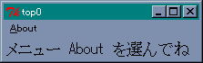
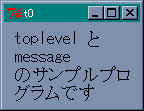
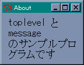
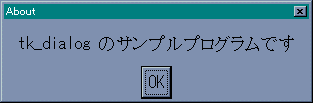
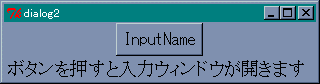
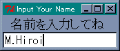

トップレベルのウィンドウ
●コマンド toplevel
Tcl/Tk は wish (WIndow SHell) が用意するメインウィンドウのほかにも、複数のウィンドウを操作することができます。新しくウィンドウを作るにはコマンド toplevel を使います。
toplevel ウィジェット名
toplevel 独自のオプションはそれほど多くありません。よく使うオプションがメニューを設定する -menu です。新しいウィンドウは、メインウィンドウから生成されるので、ウィジェット名はピリオド ( . ) から始まることに注意してください。
それでは簡単な例題として、アプリケーションの情報 (バージョンや作者名など) を表示するためのウィンドウを作ってみます。メインウィンドウのメニュー About が選択されたら表示することにしましょう。まず、メインウィンドウとメニューを設定します。
リスト : メインウィンドウとメニュー
# フォントの設定
option add *font {FixedSys 14}
# メニューの設定
menu .m -type menubar
. configure -menu .m
.m add command -label "About" -under 0 -command message_window
# メインウィンドウ
label .l -text "メニュー About を選んでね"
pack .l
ここまでは、入門編で説明したことと同じなので簡単ですね。ウィンドウの生成は、プロシージャ message_window で行います。プログラムは次のようになります。
リスト : ウィンドウの生成
proc message_window {} {
toplevel .t0
message .t0.msg \
-text "toplevel と message のサンプルプログラムです"
pack .t0.msg
}
最初に toplevel で新しいウィンドウ .t0 を作成します。次に、コマンド message でメッセージウィジェットを作りテキストを表示します。ウィジェット名は、ウィンドウ .t0 の中に配置するので .t0.msg となります。メッセージウィジェットはラベルと違い、複数行の文字列を表示することができます。デフォルトでは、縦と横の比率が 150 % になるように、文字列を表示する領域を調整します。この例では、-text で指定した文字列は 4 行に渡って表示されます。この比率を指定するオプションが -aspect です。
- -aspect
文字列を表示する領域の縦横比、100 より大きいと横長で、デフォルトは 150。 - -justify
文字列の揃えを指定。center (中央寄せ)、right (右寄せ)、left (左寄せ) が指定できる。
-aspect は -width よりも優先順位が低いので、-width の値が優先されます。メッセージウィジェットの場合、-width の値は文字数ではなくドット数になるので注意してください。
これでプログラムは完成です。たったこれだけで、メニュー About をクリックするとウィンドウが表示されます。
 メインウィンドウ About をクリックしてサブウィンドウを表示
ところが、このままでは都合の悪いことがあるのです。このウィンドウを表示したまま、もう一度 About をクリックしてみてください。エラーが発生するはずです。これはウィジェット .t0 が存在しているのに、同じウィジェットを再度作成しようとしたためエラーとなるのです。このように、同じ名前のウィジェットを複数作ることはできません。それから、ウィンドウに表示されるタイトルが .t0 になっていますね。きちんとしたタイトルをつけた方が良いでしょう。
●ウィンドウの状態を調べる
ウィンドウの状態を調べるにはコマンド winfo を使います。ウィンドウの状態を調べるサブコマンドの一部を表に示します。winfo には 40 以上のサブコマンドがあるので、詳細はヘルプを参照してください。
| コマンド | 機能 |
|---|---|
| winfo geometry window | ウィンドウの位置を文字列 (幅x高さ+x+y) で返す |
| winfo width window | ウィンドウの幅を返す |
| winfo height wondow | ウィンドウの高さを返す |
| winfo x window | 親ウィンドウ内での x 座標を返す |
| winfo y window | 親ウィンドウ内での y 座標を返す |
| winfo rootx window | ディスプレイ上での x 座標を返す |
| winfo rooty window | ディスプレイ上での y 座標を返す |
| winfo exists window | ウィンドウが存在するか |
引数の window にはウィジェットを指定することができます。サブコマンド geometry でウィジェットを指定した場合、返される座標はディスプレイを基準にした座標ではなく、そのウィジェットが配置されたウィンドウを基準にした座標となります。また、winfo x/y でメインウィンドウを指定すると、ディスプレイ上での座標を返します。
このプログラムで必要になる、ウィンドウの存在を調べるコマンドは winfo exists です。たとえば、ウィンドウ .t0 を調べるには、winfo exists .t0 とすればいいわけです。.t0 が開いていれば 1 を、そうでなければ 0 を返します。
●ウィンドウの設定
ウィンドウの設定はコマンド wm (Window Manager) で行います。このコマンドもたくさんのサブコマンドがあるので、こちらもヘルプを参照してください。ウィンドウの状態を設定するサブコマンドの一部を表に示します。
| コマンド | 機能 |
|---|---|
| wm withdraw window | ウィンドウを画面から取り除く |
| wm deiconify window | ウィンドウを見える状態に戻す |
| wm iconify window | ウィンドウをアイコン化する |
| wm state window | ウィンドウの状態を返す (状態は normal, withdrawn, iconic) |
| wm geometry window string | ウィンドウを表示する位置を文字列で (幅x高さ+x+y) で指定する |
| wm maxsize window 幅 高さ | ウィンドウの最大値を指定 |
| wm minsize window 幅 高さ | ウィンドウの最小値を指定 |
| wm resizable window 真/偽 真/偽 | 幅と高さの変更を許すか |
| wm title window タイトル名 | ウィンドウのタイトルを指定 |
タイトルを設定するにはコマンド wm title を使います。ウィンドウ .t0 にタイトルをつけるには、wm title .t0 "タイトル" とすればいいわけです。
●プログラムの改良
それでは wm と winfo を使ってプログラムを改良してみましょう。
リスト : ウィンドウの生成 (改良版)
proc message_window {} {
if {![winfo exists .t0]} {
toplevel .t0
wm title .t0 "About"
message .t0.msg -width 100 \
-text "toplevel と message のサンプルプログラムです"
pack .t0.msg
}
}
まず winfo exists でウィンドウ .t0 が開いているかチェックします。まだ開いていないのであれば、toplevel で .t0 を生成します。次に、wm title でタイトルを設定します。Tcl/Tk 8.2 以前のバージョンでは、タイトルに全角文字を使うと文字化けすることがあるので注意してください。あとは今までと同じです。実際にプログラムを実行すると、ウィンドウが開いた状態でメニュー about をクリックしても、エラーは発生しません。
 サブウィンドウ（改良版）ダイアログ
●メッセージボックス
ところで、短いテキストを表示するだけならば、もっと簡単な方法があります。それは「メッセージボックス」というダイアログを使うことです。
GUI アプリケーションの場合、ボタンを押すとかメニューを選ぶといった操作は、基本的にはユーザーが自由に行うことができます。ところが、ある操作をしないと次の処理に進めない場合があります。たとえば、画像を表示する場合、表示するファイル名をユーザーから入力してもらわないと、画像ファイルを表示することはできませんね。このようなときは、必要な操作を行ってもらうようにユーザーを誘導した方がよいでしょう。このときによく使われるのが ダイアログ です。
ダイアログは重要なメッセージを表示するために開かれるウィンドウで、画面の前面に表示され、ユーザーがダイアログに応答しないかぎり、そのアプリケーションではほかの操作を行うことはできません。ダイアログは、ユーザーに特定の操作を強制したい場合には便利ですが、その反面、操作の自由度は減少します。使いすぎるとユーザーの不満が溜まることになるので注意してください。
メッセージボックスを表示するには、コマンド tk_messageBox を使います。このコマンドにはウィジェット名を指定する必要はありません。メッセージを表示してボタンが押されるのを待つだけです。指定できるオプションを表に示します。
| オプション | 機能 | ||||||||||||
|---|---|---|---|---|---|---|---|---|---|---|---|---|---|
| -type |
| ||||||||||||
| -message | ダイアログに表示する文字列 | ||||||||||||
| -icon | ダイアログに表示するアイコン (error, info, question, warning のいずれかを指定) | ||||||||||||
| -default | デフォルトボタンの名前を指定 | ||||||||||||
| -title | ダイアログのタイトルを指定 | ||||||||||||
| -parent | ダイアログを表示するウィンドウを指定 |
tk_messageBox は押されたボタンの種類を文字列で返します。たとえば、種別に yesno を指定した場合、「はい」のボタンを押せば yes という文字列を返します。メッセージを表示するだけであれば、-type には ok を、-icon には info を指定すればいいでしょう。プログラムは次のようになります。
リスト : tk_messageBox のサンプル
# メッセージボックス
proc message_window {} {
tk_messageBox -type ok -icon info -title "About" \
-message "tk_messageBox のサンプルプログラムです"
}
# フォントの設定
option add *font {FixedSys 14}
# メニューの設定
menu .m -type menubar
. configure -menu .m
.m add command -label "About" -under 0 -command message_window
# メインウィンドウ
label .l -text "メニュー About を選んでね"
pack .l
メッセージウィジェットと違い、文字列はそのまま表示されます。文字列中に改行文字を含めれば、複数行に渡って表示することができます。ほかの種別のメッセージボックスは、Widget Tour のデモプログラムを参考にしてください。
 メッセージボックスの画像
メッセージボックスの画像
●ダイアログの作成
このほかにも、ダイアログを作成するコマンド tk_dialog が用意されています。
tk_dialog ウィジェット名 title message bitmap 番号 文字列 ...
tk_dialog の場合、同じ名前のウィジェットがあると、それを削除するので注意してください。title、message、bitmap は、ダイアログに表示するタイトル、メッセージ、ビットマップを指定します。空文字列を指定すると表示されません。それから bitmap にイメージを指定することはできません。
ボタンの設定は番号と文字列で行います。文字列はボタンにつけるラベルで、いくつでも指定することができます。番号はデフォルトのボタンを指定します。ボタンの順番は、リストと同様に 0 から数えます。押したボタンの種類は、名前ではなく番号で返されます。
それでは、tk_dialog を使ってメッセージを表示してみましょう。
リスト : tk_dialog のサンプル
# tk_dialog
proc message_window {} {
tk_dialog .d0 "Message" \
"tk_dialog のサンプルプログラムです" \
"" 0 OK
}
# ・・・ 以下省略 ・・・
この例ではビットマップを表示していません。tk_messageBox のように、決められたビットマップでは都合が悪い場合は、tk_dialog を使うといいでしょう。
 tk_dialog の画像独自のダイアログを作る
Tcl/Tk では、コマンド tk_messageBox や tk_dialog を使って、メッセージを表示するダイアログを簡単に作成することができます。また、入門編で説明したように、ファイル名の入力であれば tk_getOpenFile や tk_getSaveFile を利用することができます。しかしながら、これだけではほかの操作、たとえばキーボードからデータが入力されるのを待つ、といった処理には対応できません。この場合、自前のダイアログを作成することになりますが、このときに使うコマンドが grab と tkwait です。
●grab と tkwait
グラブ (grab) はマウスやキーボードからの入力を、特定のアプリケーションやウィンドウにだけ割り当てる働きをします。
- grab set [-global] ウィンドウ
指定したウィンドウにグラブをセットする。-global を指定すると大域グラブとなり、グラブをセットしたアプリケーションしか操作できない。デフォルトでは局所グラブとなり、グラブを実行したアプリケーションだけにしか影響しない。 - grab release ウィンドウ
ウィンドウにグラブがセットされていれば、それを解除する。 - grab current [ウィンドウ]
グラブが設定されているウィンドウを返す。 - grab status ウィンドウ
ウィンドウにグラブがセットされていなければ none を返す。局所グラブの場合は local を、大域グラブの場合は global を返す。
グラブを設定したウィンドウが廃棄されると、グラブは自動的に解除されます。参考文献 [1] には、次のように書かれています。
大域グラブは解除を忘れると画面全体がロックする恐れがあるので使用しない方がよい。
ただし、M.Hiroi が使用している Windows 版 Tcl/Tk 8.2 では、大域グラブを設定してもほかのアプリケーションの操作は可能でした。このため、M.Hiroi が作成したプログラムの中には、気楽に大域グラブを設定しているものがありますが、ほかの環境では不具合の原因になるかもしれません。大域グラブは慎重に扱ってください。
tkwait は待ち合わせのためのコマンドです。次に示すように 3 つの形式があります。
- tkwait window ウィンドウ
指定したウィンドウが廃棄 (destory) されるまで待つ - tkwait visibility ウィンドウ
指定したウィンドウの可視・不可視の状態が変化するまで待つ - tkwait variable 変数名
指定した大域変数に書き込みが行われるまで待つ
このほかに、tkwait variable と同じ働きをするコマンド vwait があります。こちらは Tcl のコマンドなので、tclsh でも利用することができます。
grab と tkwait を組み合わせることで、ユーザーがデータを入力するまで待つ、といった処理を作ることができます。簡単な例題を示しましょう。ボタンを押したら名前を入力するウィンドウを開くプログラムを作ります。これにはふたつの方法があります。ひとつは、ウィンドウを作っては壊す方法で、もうひとつは、あらかじめウィンドウを作っておいて、表示しては隠す方法です。このふたつの方法でプログラムを作ってみましょう。
●ウィンドウを壊す方法
最初に、作っては壊す方法でプログラムを作ります。
リスト : ウィンドウを壊す方式 (1)
# フォントの設定
option add *font {FixedSys 14}
# 画面の設定
set message "ボタンを押すと入力ウィンドウが開きます"
button .b -text "InputName" -command "input_name"
label .l -textvariable message
pack .b .l
# 名前を入力する
proc input_name {} {
global buffer message
input_window .t0
tkwait window .t0
set message [format "入力された名前は %s です" $buffer]
}
まずボタンとラベルを配置します。ボタンが押されたら input_name を実行して、名前入力用のウィンドウを開きます。input_name はウィンドウを開いたら、そのウインドウが廃棄されるまで tkwait で待機します。input_window は、入力された名前を大域変数 buffer にセットします。あとは、入力された名前を buffer から取り出して、ラベル表示用の変数 message にセットするだけです。
リスト : ウィンドウを壊す方式 (2)
# 名前入力ウィンドウ
proc input_window {win} {
global buffer
set buffer ""
toplevel $win
wm title $win "Input Your Name"
wm geometry $win "+[expr [winfo x .] + 10]+[expr [winfo y .] + 10]"
label $win.l0 -text "名前を入力してね"
entry $win.e0 -textvariable buffer
focus -force $win.e0
grab set $win
bind $win.e0 <Return> "destroy $win"
pack $win.l0 $win.e0
}
input_window は作成するウィンドウ名を受け取り、名前が入力されらウィンドウを廃棄します。名前の入力はエントリーウィジェットを使うと簡単です。入力用バッファとして大域変数 buffer を設定します。ウィンドウを開く位置は、メインウィンドウの近くがいいでしょう。
コマンド winfo でメインウィンドウの位置を求め、作成するウィンドウの位置をコマンド wm geometry で設定します。このプログラムではウィンドウの位置を指定するだけなので、幅と高さは省略しています。また、メインウィンドウの位置を求めているので、winfo x / y の返す座標はディスプレイを基準にしていることに注意してください。
あとは、入力フォーカスとグラブをセットします。一般の GUI アプリケーションでは、キー入力はアクティブになっているウィンドウに渡されます。Tcl/Tk では、これをフォーカスウィンドウ (focus window) といいます。フォーカスウィンドウは、マウスの操作によって変更することができますが、コマンド focus によって設定することもできます。
focus [ウィジェット名] focus -force ウィジェット名
focus はフォーカスウィンドウを指定したウィジェットに設定します。ウィジェット名が省略された場合は、フォーカスウィンドウが設定されているウィジェット名を返します。オプション -force を指定した場合は、フォーカスウィンドウを強制的にウィジェットに設定します。このオプションを使うと、ほかのアプリケーションがアクティブになっている場合でも、指定したウィンドウがアクティブになります。このプログラムでは、エントリウィジェットに入力フォーカスを設定します。
リターンキーが入力されたならば、データ入力終了とみなしてウィンドウを destroy で廃棄します。この処理は、エントリーのリターンキーにバインドすればいいですね。これでプログラムは完成です。
 メインウィンドウ 名前を入力するダイアログ
●ウィンドウを隠す方法
今度は、表示して隠す方式で作ってみましょう。ウィンドウを作ったらコマンド wm withdraw でウィンドウを隠しておきます。そして、ボタンが押されたら wm deiconify でウィンドウを表示し、名前の入力が終わったならば、wm withdraw でウィンドウを隠します。
ところで、ウィンドウを隠す方法では問題点がひとつあります。それは、名前を入力するウィンドウで、右上隅の閉じるボタンを押したときの処理です。通常の動作では、このボタンが押されるとウィンドウが廃棄されるのですが、それでは困ってしまいますね。
Tcl/Tk の場合、重要なイベントが起こった、もしくはこれから起こるというときには、そのイベントをアプリケーションに知らせる仕組みが用意されています。これを「ウィンドウマネージャープロトコル」と呼びます。ウィンドウが廃棄されるときは WM_DELETE_WINDOW というプロトコルが通知されます。アプリケーション側ではコマンド wm protocol を使って、このプロトコルが通知されたときの動作を設定することができます。
wm protocol ウィンドウ プロトコル スクリプト
WM_DELETE_WINDOW のデフォルトの動作がウィンドウを廃棄することです。このプロトコルに新しい動作を定義することで、閉じるボタンが押されてもウィンドウを廃棄せずに隠すことができます。
今回は、名前の入力が終了したら大域変数 flag に 1 をセットすることにします。名前入力用ウィンドウを表示したら、tkwait variable で flag に値が書き込まれるのを待ちます。また、WM_DELETE_WINDOW が通知された場合も入力終了とみなして、flag に 1 をセットすればいいでしょう。プログラムは次のようになります。
リスト : ウィンドウを隠す方式
# ウィンドウを作る
proc make_window {win} {
global buffer
toplevel $win
wm title $win "Input Your Name"
label $win.l0 -text "名前を入力してね"
entry $win.e0 -textvariable buffer
bind $win.e0 <Return> "set flag 1"
bind $win.e0 <Map> "focus -force $win.e0"
pack $win.l0 $win.e0
wm protocol $win WM_DELETE_WINDOW "set flag 1"
wm withdraw $win
}
エントリーウィジェットで Return が入力されたら flag に 1 をセットします。この flag は大域変数として扱われることに注意してください。バインドされたスクリプト "set flag 1" は、プロシージャ make_window 内で実行されるのではないからです。つまり、バインドを設定するときとスクリプトを実行するときとでは、アクセスできる局所変数が異なっているのです。
たとえば、make_window で有効な局所変数である win は、スクリプトを実行するときには make_window を実行していたときの値ではなく、大域変数として扱われます。次行のバインドでは win を使っていますが、この場合は変数展開が行われるため問題はありません。
もうひとつ、エントリーにバインドを定義しています。ウィンドウが見える状態になったら、エントリーにフォーカスを設定します。ウィジェットが見える状態になると発生するイベントが Map です。逆に、見えなくなると発生するイベントが Unmap です。よく使われるイベントを表に示します。
| イベント | 種類 |
|---|---|
| ButtonPress (Button) | マウスボタンが押されたときに発生 |
| ButtonRelease | マウスボタンが離されたときに発生 |
| KeyPress (Key) | キーが押されたときに発生 |
| KeyRelease | キーが離されたときに発生 |
| Motion | ウィジェット上でマウスが移動したときに発生 |
| Enter | マウスがウィジェットの内に入ったときに発生 |
| Leave | マウスがウィジェットの外に出たときに発生 |
| FocusIn | ウィジェットが入力フォーカスを得たときに発生 |
| FocusOut | ウィジェットが入力フォーカスを失ったときに発生 |
| Map | ウィジェットがスクリーンに現れたときに発生 |
| Unmap | ウィジェットがスクリーンから消えたときに発生 |
| Configure | ウィンドウの大きさが変更されたときに発生 |
あとは、wm protocol で WM_DELETE_WINDOW が通知されたら flag を 1 にセットするように定義し、wm withdraw で作成したウィンドウを隠します。それから、名前入力用ウィンドウはボタンが押される前に作っておかなければいけません。画面の設定が終わったら make_window を実行してウィンドウを作成しておきます。
input_window はウィンドウを表示して、名前が入力されたらウィンドウを隠します。
リスト : 名前の入力
proc input_name {} {
global buffer message flag
set buffer ""
wm deiconify .t0
wm geometry .t0 "+[expr [winfo x .] + 10]+[expr [winfo y .] + 10]"
grab set .t0
tkwait variable flag
grab release .t0
wm withdraw .t0
set message [format "入力された名前は %s です" $buffer]
}
まず wm deiconify でウィンドウを見える状態にし、wm geometry でウィンドウの位置を指定します。次にグラブを設定し、tkwait variable で大域変数 flag に書き込みが行われるまで待ちます。入力が終了したら、グラブを解除してウィンドウを隠します。ウィンドウを隠しただけでは、グラブは解除されません。ウィンドウを壊す方法とは違い、グラブの解除を忘れないでください。あとはメインウィンドウに入力された名前を表示します。これでプログラムは完成です。